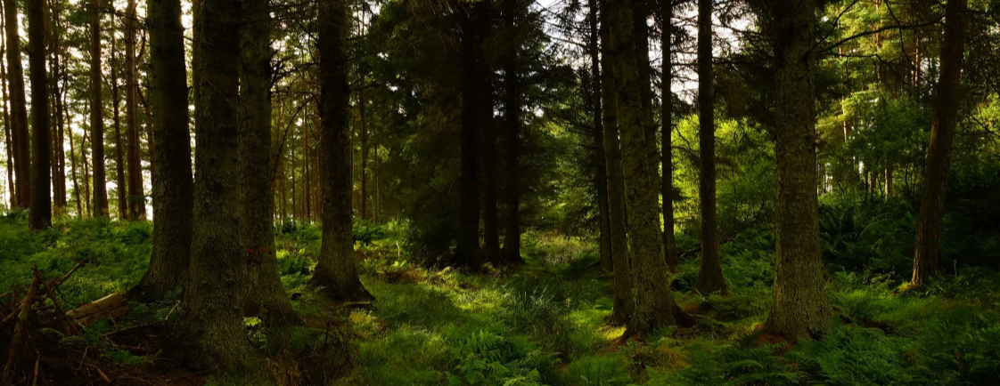
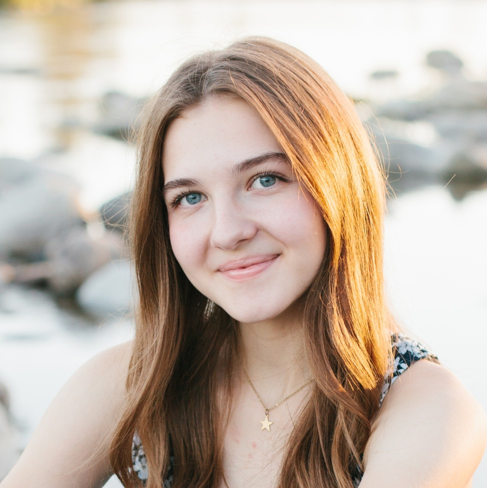

The Portfolio of Kali Richardson

About Me
Basics
My name is Kali A. Richardson. I am the eldest of two siblings, my mom is a nurse and my dad a technician for a school district. I am a student as Brigham Young University in Idaho (BYUI) and am majoring in Software Engineering. I am a member of the InterFaith Leadership Society and the Vice-President to the Society of Women Engineers (SWE). I'm pretty introverted but love going and hanging out with friends, as long as it isn't constantly. I need my me-time after all. I'm also a person who like to have a plan, schedule, or idea of what I'm going to do.
Likes
First things first, I am a HUGE reader. Fantasy is my favorite genre but I also like the occasional dystopian and especially love side romances. As long as romance isn't the main plot, I like it. Whenever given an opportunity, I will read as much as I can, though that does make socialzing more difficult. Luckily I'm already working on that and am always sure to plan some sort of activity occasionally and to keep an open mind to invitations. Now, with that out of the way I also enjoy outdoor activities such as hiking, volleyball, tennis, pickleball, though I don't do them too often. I love a good outdoor activity but I a more indoor person so I don't usually plan for outdoor activies that often, I always enjoy them though. My favorite snack is flamen hot cheetos! They are the best! I also really like flamen hot white cheddar popcorn, it's a little weird but so good. I also LOVE music, I don't play anything but I'll often have an earbud in.
Quirks
- I don't watch tv that often as I'd rather read but I get really bad second-hand embarrassment to I don't really like to watch rom-coms
- I like to eat flamen hot cheetos (and flamen hot white cheddar popcorn) with chopsticks
- I'm a night owl but when I get up, I'm up. I can't go back to sleep
- I'm a big reader but I hate writing
